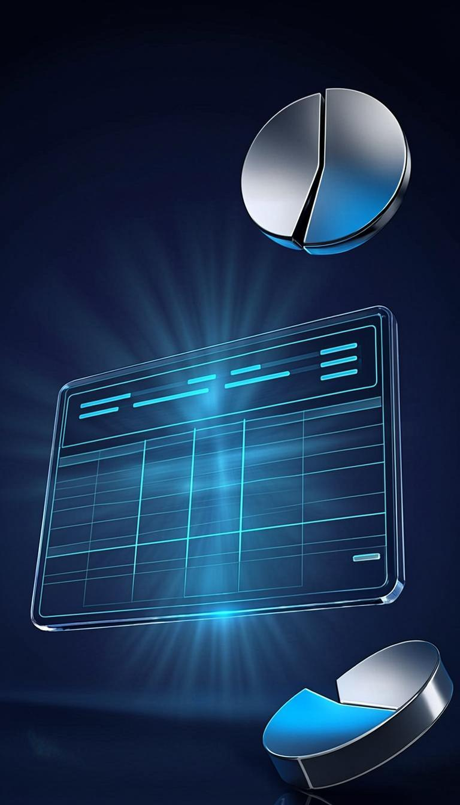
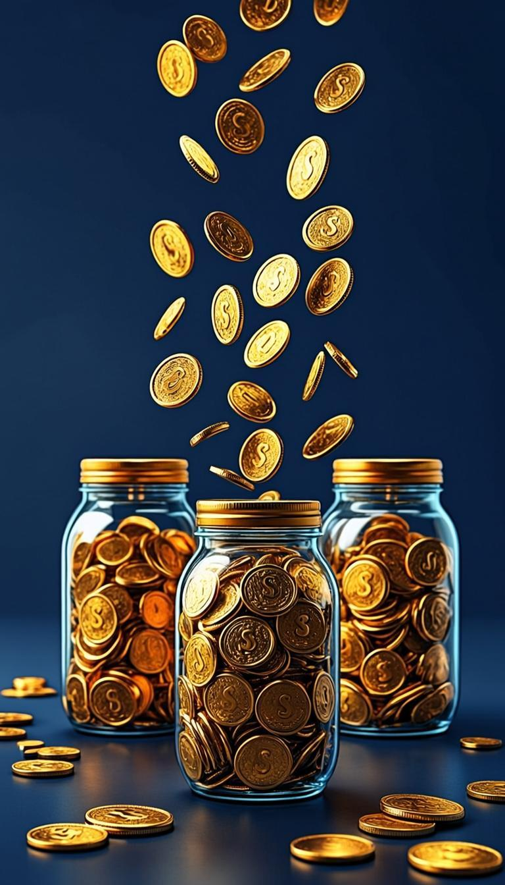
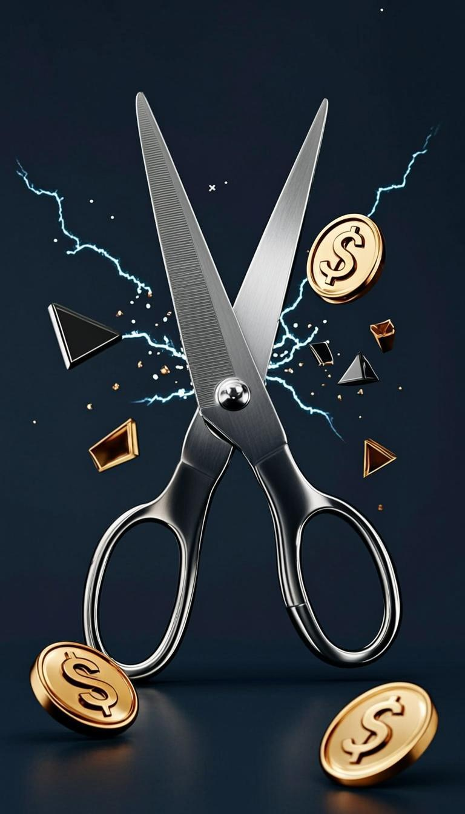
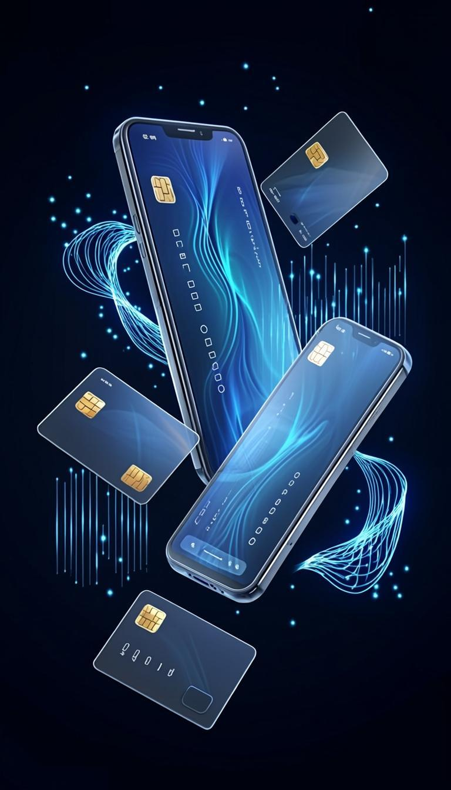
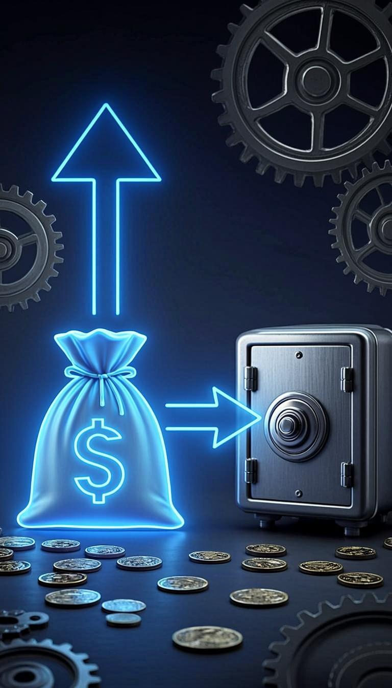
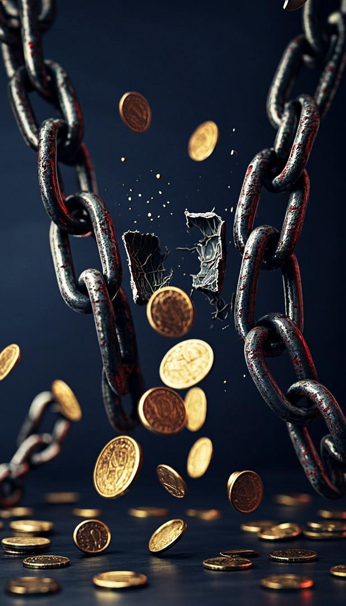
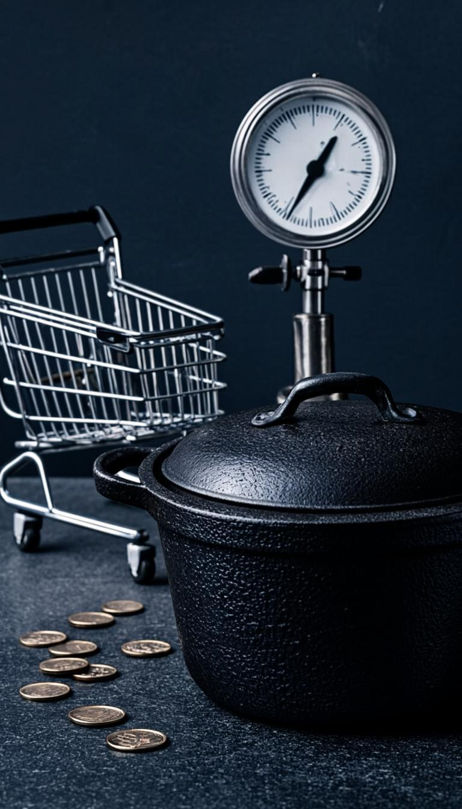
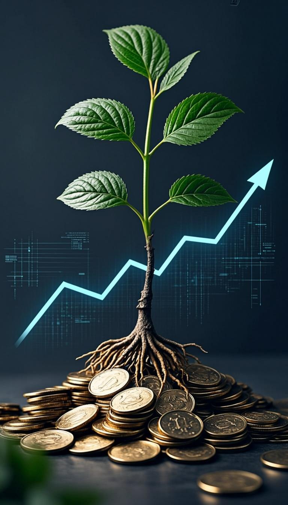
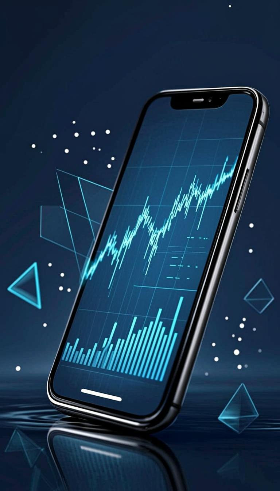
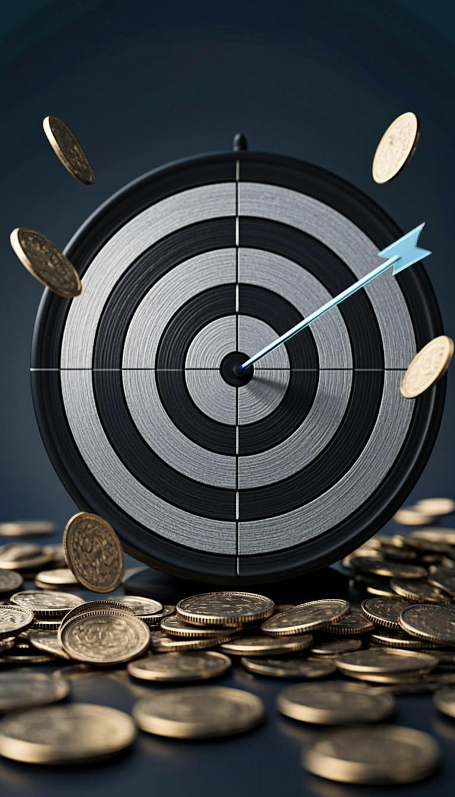

Guide Complet 2025
Comment economiser et gerer son argent intelligemment
Le guide definitif pour prendre le controle total de vos finances. Budget, epargne automatisee, elimination des dettes, investissement et outils pratiques pour construire votre avenir financier pas a pas.
Ebook Complet • 12 Chapitres • Exercices Pratiques • Tableaux Comparatifs
Edition 2026
Sommaire
01Les fondations d'une relation saine avec l'argent
02Creer et maitriser son budget : le plan de bataille financier
03Les regles d'or de la repartition de l'argent
04Identifier et eliminer les depenses inutiles
05Optimiser ses comptes bancaires et ses moyens de paiement
06Automatiser son epargne pour que l'argent travaille tout seul
07Gerer et eliminer ses dettes strategiquement
08Economiser au quotidien sans sacrifier sa qualite de vie
09Construire un fonds d'urgence indestructible
10Investir son epargne pour faire travailler son argent
11Les outils et applications indispensables pour gerer son argent
12Planifier ses objectifs financiers et suivre sa progression
L'argent touche a chaque aspect de votre vie : votre logement, votre nourriture, votre sante, votre education, vos loisirs, vos relations, votre tranquillite d'esprit et votre capacite a realiser vos projets. Pourtant, personne ne vous a jamais appris a le gerer correctement. L'ecole vous apprend a resoudre des equations du second degre mais pas a faire un budget. Elle vous apprend l'histoire des rois de France mais pas l'histoire de l'argent. Elle vous apprend a etre un bon salarie mais pas a gerer les revenus que vous gagnez. Ce guide est le correctif que vous n'avez jamais eu.
Les 12 chapitres qui suivent couvrent l'ensemble du sujet de la gestion financiere personnelle, des fondations mentales aux outils les plus avances, en passant par les strategies d'economie au quotidien, l'elimination des dettes, la constitution d'un fonds d'urgence et l'investissement. Chaque chapitre contient des explications detaillees, des exemples concrets, des tableaux comparatifs, des exercices pratiques et des conseils actionnables que vous pouvez appliquer immediatement.
Ce guide ne vous demande pas de devenir un expert en finance ni de changer radicalement votre vie du jour au lendemain. Il vous demande d'appliquer une strategie a la fois, de l'integrer dans votre routine pendant quelques semaines, puis de passer a la suivante. En 6 mois, vous aurez transforme votre relation avec l'argent de maniere permanente. En 1 an, vos finances seront meconnaissables. Et en 5 ans, vous regarderez en arriere et vous ne croirez pas la difference.
Comment utiliser ce guide
Lisez un chapitre par jour. Faites les exercices. Appliquez au moins une strategie de chaque chapitre dans les 48 heures. Revenez sur les chapitres chaque mois pour approfondir votre comprehension. La connaissance sans action est inutile. L'action sans connaissance est dangereuse. La combinaison des deux est la cle de votre succes financier.
Avant de pouvoir economiser et gerer votre argent intelligemment, vous devez comprendre un fait fondamental : l'argent n'est ni bon ni mauvais, c'est un outil. Comme un marteau, il peut construire une maison ou briser une vitre. Tout depend de celui qui le tient. La plupart des problemes financiers ne viennent pas d'un manque d'argent mais d'un manque de comprehension de la nature de l'argent et d'une relation dysfonctionnelle avec lui. Ce chapitre pose les fondations mentales et pratiques sur lesquelles toute votre strategie financiere sera construite. Sans ces fondations, toutes les techniques d'economie et de gestion que vous apprendrez dans ce livre s'effondreront comme un chateau de cartes.
Comprendre la vraie nature de l'argent : un outil, pas une fin
L'argent est une invention humaine remarquable. Avant l'argent, les echanges se faisaient par troc, un systeme extremement inefficace ou vous deviez trouver quelqu'un qui veut exactement ce que vous avez et qui a exactement ce que vous voulez. L'argent a resolu ce probleme en servant d'universel d'echange. Il represente la valeur que vous avez creee pour les autres et la valeur que vous pouvez obtenir en retour. Comprendre cette nature fondamentale de l'argent change tout. Quand vous voyez l'argent comme un outil plutot que comme une fin en soi, vous arretez de l'accumuler pour l'accumuler et vous commencez a l'utiliser strategiquement pour atteindre vos objectifs. Les personnes les plus riches du monde ne sont pas riches parce qu'elles aiment l'argent. Elles sont riches parce qu'elles comprennent comment l'outil fonctionne et elles l'utilisent mieux que les autres. Votre premiere mission est de changer votre perspective : l'argent n'est pas le but, c'est le vehicule qui vous emmene ou vous voulez aller. Plus vous maitrisez ce vehicule, plus vous atteignez vos objectifs rapidement.
Les 5 lois universelles de l'argent que tout le monde devrait connaitre
La premiere loi est la loi de la valeur : l'argent suit la valeur. Plus vous creez de valeur pour les autres, plus l'argent afflue vers vous. Ce n'est pas une question de chance ou de connections, c'est une question de valeur creee. Un medecin qui sauve des vie cree enormement de valeur, un entrepreneur qui resout un probleme quotidien cree de la valeur, un artiste qui touche des milliers de personnes cree de la valeur. La deuxieme loi est la loi du flux : l'argent doit circuler. L'argent immobilise perd de sa valeur a cause de l'inflation. L'argent investi et mis en mouvement se multiplie. La troisieme loi est la loi de la patience : la richesse se construit dans le temps. Les gains rapides sont rarement durables. Les vraies fortunes se construisent sur des annees de decisions intelligentes repetees. La quatrieme loi est la loi de la discipline : vous ne pouvez pas depenser plus que ce que vous gagnez durablement. C'est une loi mathematique implacable. La cinquieme loi est la loi de l'education : celui qui comprend l'argent le maitrise, celui qui ne le comprend pas le perd. Ces cinq lois sont les regles du jeu financier. Vous pouvez choisir de les ignorer et de subir les consequences, ou vous pouvez les apprendre, les appliquer et en tirer avantage.
Faire le diagnostic de votre sante financiere actuelle
Avant de pouvoir ameliorer votre situation financiere, vous devez connaitre exactement ou vous en etes. La plupart des gens evitent de regarder leurs finances en face parce que la realite est souvent inconfortable. Mais ce diagnostic est indispensable. Commencez par calculer votre patrimoine net : additionnez tout ce que vous possedez (compte bancaire, epargne, biens) et soustrayez tout ce que vous devez (credits, dettes). Le resultat est votre patrimoine net. S'il est positif, vous etes dans une bonne position. S'il est negatif, vous devez prioriser le remboursement de vos dettes. Ensuite, calculez votre taux d'epargne mensuel : divisez le montant que vous epargnez chaque mois par vos revenus mensuels et multipliez par 100. Si ce taux est inferieur a 10%, vous etes en zone de danger financier. Entre 10% et 20%, vous etes dans la moyenne mais vulnérable. Au-dela de 20%, vous etes sur la voie d'une solidite financiere durable. Enfin, identifiez votre principale fuite financiere : la categorie de depenses ou vous gaspillez le plus d'argent chaque mois sans en avoir conscience. Pour la plupart des gens, c'est les repas a l'exterieur, les abonnements ou les achats impulsifs en ligne.
Se fixer des objectifs financiers clairs, mesurables et realistes
Vous ne pouvez pas atteindre une destination si vous ne savez pas ou vous allez. Vos objectifs financiers sont votre boussole. Sans eux, vous naviguez a l'aveuglette et chaque decision financiere est prise au hasard. Un bon objectif financier repond a cinq criteres. Premierement, il est specifique : au lieu de dire 'je veux epargner plus', dites 'je veux epargner 200 euros par mois'. Deuxiemement, il est mesurable : vous pouvez suivre votre progression avec des chiffres precis. Troisiemement, il est atteignable : visez un defi qui vous pousse hors de votre zone de confort sans etre impossible. Si vous gagnez 1500 euros par mois, epargner 750 euros est un defi realiste mais ambitieux. Epargner 1400 euros est irrealiste et vous decouragera. Quatriemement, il est pertinent : l'objectif doit etre aligne avec vos aspirations de vie. Si votre reve est de voyager, epargner pour une maison n'est peut-etre pas la priorite. Cinquiemement, il est temporel : fixez une date butoir. 'J'aurai un fonds d'urgence de 5000 euros d'ici le 31 decembre 2026' est un objectif complet. Ecrivez vos 3 objectifs financiers principaux et affichez-les la ou vous les verrez chaque jour.
| KPI Financier |
Zone Danger |
Zone Moyenne |
Zone Excellence |
| Taux d'epargne |
Moins de 10% |
10% a 20% |
Plus de 20% |
| Fonds d'urgence |
Moins d'1 mois |
1 a 3 mois |
3 a 6 mois+ |
| Ratio d'endettement |
Plus de 40% |
25% a 40% |
Moins de 25% |
| Diversification |
1 seul revenu |
2 revenus |
3+ revenus |
| Education financiere |
Aucune |
Occasionnelle |
Quotidienne |
A retenir
Votre patrimoine net est le score final de votre vie financiere. Chaque decision que vous prenez augmente ou diminue ce score. Faites en sorte qu'il augmente chaque mois, meme d'un seul euro.
Piege a eviter
Ne vous attendez pas a etre parfait immediatement. La perfection est l'ennemi de l'action. Commencez avec le budget le plus simple possible et ameliorez-le au fil des mois.
Exercices pratiques
- Calculez votre patrimoine net exact aujourd'hui. Notez le quelque part et comparez-le dans 3 mois pour voir votre progression.
- Calculez votre taux d'epargne actuel. Si vous etes en dessous de 20%, identifiez 3 depenses a reduire cette semaine pour atteindre ce seuil.
- Ecrivez vos 3 objectifs financiers principaux en utilisant la methode SMART. Affichez-les sur votre miroir ou en fond d'ecran.
- Identifiez votre plus grande fuite financiere et mettez en place une action concrete cette semaine pour la colmater.
Conseil du chapitre
L'argent est le reflet de la valeur que vous apportez au monde. Si vous voulez plus d'argent, ne cherchez pas a le gagner plus durement. Cherchez a apporter plus de valeur, plus intelligemment, a plus de personnes.

Le budget est le plan de bataille de votre vie financiere. Sans budget, vous naviguez a l'aveuglette, vous depensez sans conscience et vous epargnez sans strategie. Avec un budget, chaque euro a une destination, chaque depense est deliberée et votre avenir financier se construit methodiquement. Pourtant, le mot 'budget' fait peur a beaucoup de gens parce qu'ils l'associent a la restriction et a la frustration. Ce chapitre va transformer votre vision du budget en un outil de liberation et de controle, pas de privation. Vous decouvrirez que budgetiser, c'est en realite dire a votre argent ou aller au lieu de vous demander ou il est passe.
Pourquoi la majorite des gens detestent le budget (et pourquoi ils ont tort)
La majorite des gens associent le budget a la restriction, a la frustration et a une image negative de comptabilite ennuyeuse. Ils pensent que budgetiser signifie couper dans tout ce qui rend la vie agreable et vivre comme un moine. Cette perception est non seulement fausse mais dangereuse, car elle empeche les gens de prendre le controle de leurs finances. La realite est exactement l'inverse : un budget ne vous prive pas de libertee, il vous en donne. Quand vous n'avez pas de budget, chaque achat est une source de stress inconscient parce qu'une partie de vous sait que vous ne savez pas si vous pouvez vous le permettre. Avec un budget, vous savez exactement combien vous pouvez depenser dans chaque categorie, et vous pouvez depenser ce montant en toute tranquillite d'esprit. Le budget ne vous dit pas de ne pas depenser. Il vous dit de depenser intentionnellement. La difference est enorme. C'est la difference entre un general qui envoie ses troupes au hasard et un general qui planifie chaque mouvement strategique. Dans les deux cas, il y a des combats, mais dans le deuxieme cas, les batailles sont gagnees.
La methode du budget zero : chaque euro a une mission
Le budget zero est la methode la plus efficace pour prendre le controle total de vos finances. Le principe est simple : chaque euro de revenu doit etre affecte a une categorie de depense, d'epargne ou d'investissement avant le debut du mois. A la fin de votre planification, il reste zero euro non alloue. Cela ne signifie pas que vous depensez tout. Cela signifie que chaque euro sait ou il va. Voici comment proceder. Premiere etape, notez votre revenu mensuel total apres impots. C'est votre point de depart. Deuxieme etape, listez toutes vos depenses fixes mensuelles : loyer, electricite, eau, internet, assurance, abonnements. Troisieme etape, estimez vos depenses variables : alimentation, transport, loisirs, vetements. Quatrieme etape, fixez votre montant d'epargne mensuel et traitez-le comme une depense fixe non negociable. Cinquieme etape, ajustez les montants jusqu'a ce que revenus minus toutes les categories egale zero. Si vos depenses depassent vos revenus, c'est le signal qu'une categorie doit etre reduite. Ce processus, fait une fois par mois le dernier jour du mois precedent, prend environ 30 minutes et vous donne un controle total sur votre argent pour les 30 prochains jours.
Le suivi hebdomadaire : la discipline qui fait la difference
Creer un budget n'est que la moitie du travail. L'autre moitie, et souvent la plus negligee, est le suivi. Un budget sans suivi est comme une carte sans boussole : vous savez ou vous voulez aller mais vous ne savez pas si vous etes sur la bonne route. Le suivi hebdomadaire consiste a prendre 15 minutes chaque dimanche soir pour verifier ou vous en etes par rapport a votre budget mensuel. Ouvrez votre application bancaire, notez chaque depense de la semaine passee dans les bonnes categories, et comparez le cumul avec votre budget. Si vous avez depense 180 euros sur votre budget alimentation de 300 euros et que vous etes a la moitie du mois, vous etes dans le vert. Si vous avez depense 250 euros sur ces 300 euros, vous devez ralentir pour les 2 prochaines semaines. Ce suivi hebdomadaire cree un feedback loop qui vous permet de corriger la trajectoire en temps reel plutot que de decouvrir a la fin du mois que vous avez depasse votre budget. C'est cette discipline de suivi qui separe ceux qui parlent de gestion financiere de ceux qui la pratiquent reellement. En 3 mois de suivi hebdomadaire, vous develpperez une conscience financiere qui transformera permanentement votre rapport a l'argent.
Les 3 categories de depenses que tout budget doit inclure
Un budget intelligent se divise en trois grandes categories. La premiere categorie est les besoins obligatoires : loyer ou mensualite d'emprunt, charges de logement (electricite, eau, gaz, internet), assurances, frais de transport pour le travail, alimentation de base. Ces depenses representent generalement 50 a 60% du revenu et sont difficiles a reduire rapidement, bien que des optimisations soient toujours possibles. La deuxieme categorie est les besoins souhaites mais non essentiels : sorties au restaurant, abonnements de divertissement, vetements au-dela du strict necessaire, loisirs, vacances. Ces depenses representent 20 a 30% du revenu et c'est ici que les plus grandes economies sont possibles. La troisieme categorie est l'epargne et l'investissement : fonds d'urgence, investissements a long terme, projets futurs. Cette categorie devrait representer au minimum 20% de votre revenu et etre traitee comme la depense la plus importante de votre budget, pas comme le reste apres avoir tout depense. L'erreur la plus courante est d'epargner ce qu'il reste a la fin du mois. La bonne approche est d'epargner en premier, des que le revenu arrive, et de vivre avec ce qui reste. Cette inversion simple est la cle de toute gestion financiere reussie.
| Categorie |
50/30/20 (2000 euros) |
40/30/30 (2000 euros) |
30/20/50 (2000 euros) |
| Besoins |
1000 euros |
800 euros |
600 euros |
| Loisirs |
600 euros |
600 euros |
400 euros |
| Epargne/Invest. |
400 euros |
600 euros |
1000 euros |
| Epargne/an |
4800 euros |
7200 euros |
12000 euros |
| En 10 ans a 7% |
66 000 euros |
99 000 euros |
165 000 euros |
A retenir
Le budget n'est pas une prison. C'est un plan de vol qui vous emmene la ou vous voulez aller en toute securite. Le pilote qui suit son plan de vol arrive toujours a destination.
Piege a eviter
Ne changez pas de repartition du jour au lendemain. Reduisez vos depenses de loisirs progressivement de 5% par mois jusqu'a atteindre votre objectif.
Exercices pratiques
- Creez votre premier budget zero ce soir. Utilisez un simple tableur ou une application comme Bankin ou YNAB. Affectez chaque euro a une categorie.
- Configurez un rappel hebdomadaire pour votre suivi budgetaire du dimanche soir. Bloquez 15 minutes dans votre agenda de maniere recurrente.
- Identifiez votre categorie de depenses la plus elevee apres les besoins obligatoires et reduisez-la de 20% ce mois-ci.
- Tenez un journal de toutes vos depenses pendant 7 jours, meme les plus petites. Vous serez surpris par ce que vous decouvrirez.
Conseil du chapitre
Un budget n'est pas une prison, c'est un plan de vol. Les pilotes d'avion ne detestent pas leur plan de vol. Ils l'aiment parce qu'il leur donne la confiance d'arriver a destination en toute securite.

Si vous gagnez 2000 euros par mois, comment les repartir entre vos besoins, vos envies et votre avenir ? C'est la question que la plupart des gens ne se posent jamais, et c'est pourquoi ils vivent au-dessus de leurs moyens sans le savoir. La repartition intelligente de votre argent entre les differentes categories de depenses et d'epargne est la decision la plus importante de votre vie financiere. Ce chapitre vous presente les regles les plus eprouvees pour repartir votre argent de maniere optimale, de la celebre regle du 50/30/20 a des strategies avancees pour accelerer votre epargne tout en maintenant une qualite de vie agreable.
La regle du 50/30/20 : le standard de base a adopter immediatement
La regle du 50/30/20, popularisee par la senatrice américaine Elizabeth Warren dans son livre All Your Worth, est la methode de repartition la plus connue et la plus accessible. Son principe est simple : 50% de vos revenus apres impots sont alloues aux besoins essentiels, 30% aux envies et loisirs, et 20% a l'epargne et au remboursement de dettes. Pour un revenu de 2000 euros net, cela donne 1000 euros pour les besoins, 600 euros pour les loisirs et 400 euros pour l'epargne. Cette repartition offre un equilibre entre la securite financiere, la qualite de vie et la construction d'un avenir. C'est le point de depart ideal pour quelqu'un qui n'a jamais budgetise. Ne vous inquietez pas si vous n'etes pas encore a ces proportions. Si vous depensez 70% en besoins, commencez par reduire a 65%, puis 60%, puis 55% progressivement sur plusieurs mois. L'important n'est pas d'etre parfait immediatement, c'est de tendre vers cette repartition de maniere constante. La regle du 50/30/20 n'est pas gravée dans le marbre. C'est un guide, un point de reference qui vous donne une direction claire.
La regle du 40/30/30 : pour ceux qui veulent accelerer leur epargne
Quand vous maitrisez le 50/30/20 et que vous voulez accélérer la construction de votre patrimoine, vous pouvez passer a une repartition plus agressive : 40% pour les besoins, 30% pour les loisirs et 30% pour l'epargne. Cette repartition n'est pas pour tout le monde. Elle necessite soit un revenu plus eleve, soit une capacite a reduire significativement les depenses non essentielles. Pour y parvenir, vous devez optimiser vos besoins fixes (changer de logement moins cher, negocier vos abonnements, optimiser vos depenses d'energie) et etre plus selectif dans vos loisirs. La difference entre 20% et 30% d'epargne peut sembler modeste, mais sur le long terme avec les interets composes, elle represente des dizaines de milliers d'euros de difference. Pour un revenu de 2000 euros, passer de 400 a 600 euros d'epargne mensuelle, c'est 2400 euros de plus par an. Investis a 8% pendant 20 ans, cela represente plus de 115000 euros de difference. C'est le prix d'un appartement dans certaines villes. Pour ceux qui veulent aller encore plus vite, la regle du 30/20/50 est l'etape ultime : 30% pour les besoins, 20% pour les loisirs et 50% pour l'epargne et l'investissement. C'est le niveau des epargnants agressifs qui visent l'independance financiere anticipee.
La strategie du 'pay yourself first' : se payer en priorite
Le concept du 'pay yourself first', popularise par le livre L'Homme le plus riche de Babylone de George Clason, est le principe le plus puissant de la gestion financiere personnelle. Son idee est contre-intuitive pour la plupart des gens mais extremement efficace : au lieu d'epargner ce qu'il reste a la fin du mois, vous vous payez d'abord en transferant immediatement votre montant d'epargne vers votre compte epargne le jour ou vous recevez votre revenu. Ensuite, vous vivez avec ce qui reste. Cette inversion simple a un impact psychologique massif. Quand vous epargnez a la fin du mois, vous epargnez toujours moins que prevu parce que la tentation de depenser est trop forte et les 'depenses inattendues' absorbent tout le reste. Quand vous vous payez en premier, l'epargne est garantie et vous adaptez naturellement votre mode de vie au reste. Configurez un virement automatique permanent le jour de la paie. Ce virement doit etre la premiere operation qui se produit sur votre compte, avant toute autre depense. Automatisez ce processus et vous n'aurez plus besoin de volonte ou de discipline pour epargner. Le systeme le fait pour vous. En 6 mois, vous ne remarquerez meme plus que cet argent part, mais votre epargne aura considerablement augmente.
Adapter sa repartition aux differentes phases de la vie
La repartition ideale de votre argent n'est pas fixe. Elle doit evoluer en fonction de votre situation, de vos objectifs et de votre phase de vie. Pendant la phase de demarrage (debut de vie active, revenus modestes), visez le 50/30/20 en priorisant le remboursement des dettes et la constitution d'un fonds d'urgence. Pendant la phase de croissance (revenus en hausse, stabilite professionnelle), passez au 40/30/30 pour accelerer votre epargne et commencer a investir. Pendant la phase d'accumulation (revenus eleves, peu de charges), visez le 30/20/50 pour maximiser la constitution de votre patrimoine. Pendant la phase de transition (approche de la retraite ou d'un objectif majeur), ajustez progressivement votre portefeuille vers plus de securite. La cle est de reevaluer votre repartition tous les 6 mois et de l'ajuster en fonction de votre situation. Ne restez pas bloqué sur une repartition qui ne correspond plus a votre vie. Un budget est un document vivant qui evolue avec vous. L'important est de toujours maintenir un taux d'epargne significatif, meme dans les phases les plus difficiles. Meme 10% d'epargne dans une phase difficile est mieux que 0%.
| Type de depense |
Montant mensuel moyen |
Economie possible |
Economie annuelle |
| Abonnements oublies |
45 euros |
100% |
540 euros |
| Restauration quotidienne |
250 euros |
60% |
1800 euros |
| Marques vs distributeur |
180 euros |
30% |
648 euros |
| Frais bancaires |
25 euros |
100% |
300 euros |
| Achats impulsifs en ligne |
120 euros |
70% |
1008 euros |
A retenir
Le secret de l'epargne n'est pas le montant, c'est l'automatisation. Configurez le systeme une fois et laissez-le travailler pour vous pendant des annees sans intervention.
Piege a eviter
N'annulez pas tous vos abonnements d'un coup par frustration. Gardez ceux qui vous apportent le plus de valeur et annulez les autres progressivement.
Exercices pratiques
- Calculez votre repartition actuelle (besoins, loisirs, epargne). Comparez-la a la regle du 50/30/20 et identifiez les ecarts.
- Configurez un virement automatique le jour de votre prochaine paie vers votre compte epargne. Commencez avec 10% si 20% semble trop.
- Si vos besoins depassent 50%, identifiez une action concrete pour les reduire de 5% ce mois-ci (negocier un abonnement, changer de fournisseur, etc.).
- Revuez votre repartition tous les 6 mois. Marquez la date dans votre calendrier d'aujourd'hui.
Conseil du chapitre
La question la plus importante de votre mois financier n'est pas 'combien ai-je gagne ?' mais 'combien ai-je garde ?' Le revenu vous donne le train de la richesse, mais c'est l'epargne qui construit les rails.

Le gaspillage financier est silencieux. Il ne se voit pas, il ne se sent pas, mais il saigne votre patrimoine chaque jour. Des abonnements oublies, des achats impulsifs repetitifs, des habitudes de consommation couteuses que vous ne remarquez plus parce qu'elles font partie de votre routine. La plupart des gens gaspillent entre 10 et 30% de leurs revenus sans s'en rendre compte. Sur un revenu de 2000 euros, cela represente 200 a 600 euros par mois, soit 2400 a 7200 euros par an. Ce chapitre va vous donner une loupe pour voir chaque euro qui fuit et un plan systematique pour colmater chaque fuite.
L'audit mensuel des depenses : reveler l'invisible
L'audit mensuel est votre outil de diagnostic le plus puissant. Chaque mois, prenez 30 minutes pour passer en revue chaque depense de votre relevé bancaire. Ne vous contentez pas de regarder les gros montants. Ce sont souvent les petites depenses repetitives qui font les plus gros degats. Un cafe a 2 euros chaque matin represente 730 euros par an. Un abonnement a 15 euros par mois que vous n'utilisez plus represente 180 euros par an. Des livraisons a domicile regulieres peuvent representer 150 a 300 euros par mois sans que vous le remarquiez. Pour effectuer un audit efficace, exportez votre releé bancaire dans un tableur et classez chaque depense en categorie. Vous identifierez rapidement les patterns : des montants reguliers que vous ne reconnaissez pas (abonnements oublies), des categories disproportionnees par rapport a leur valeur reelle (loisirs, restaurants), et des depenses emotionnelles (achats compulsifs quand vous etes triste, fatigue ou ennuyé). Chaque depense identifiee est une opportunite d'economie. Si vous trouvez 200 euros de depenses inutiles par mois et que vous les redirigez vers l'epargne, vous aurez 2400 euros de plus a la fin de l'annee sans avoir gagné un euro de plus.
Les 15 depenses insidieuses qui drainent votre budget sans que vous le sachiez
La premiere est les frais bancaires. Les banques traditionnelles facturent des frais de tenue de compte, des frais de carte, des frais pour les retraits hors reseau et des frais d'incident. Passez a une banque en ligne gratuite et economisez 100 a 300 euros par an. La deuxieme est les abonnements oublies. Faites l'inventaire de tous vos abonnements et annulez ceux que vous n'avez pas utilises au cours des 30 derniers jours. La troisieme est l'eau en bouteille. Un filtreur de carafe coute 30 euros et un filtre de rechange 5 euros par mois. Comparez cela a 1 euro par bouteille, 2 bouteilles par jour : 730 euros par an. La quatrieme est les marques de course. Les produits de marque couterent en moyenne 40% de plus que les produits distributeur pour une qualite souvent equivalente. La cinquieme est les frais de livraison. Planifiez vos commandes pour eviter les frais de livraison express. La sixieme est les garanties et assurances inutiles sur les petits appareils. La septieme est le stationnement payant quand le transport en commun est disponible. La huitieme est les achats de derniere minute au supermarche. Faites une liste et tenez-vous-y. La neuvieme est les frais de change quand vous voyagez. Utilisez des cartes sans frais de change. La dixieme est les agences de voyage. Les comparateurs en ligne vous feront economiser 20 a 50%. Les cinq dernieres incluent les cigarettes et l'alcool, les paris sportifs, les taxis reguliers quand le transport en commun existe, les achats de vetements en promotion que vous ne porterez jamais, et les cadeaux exageres pour les occasions sociales.
La technique de la reduction de 1% : economiser sans sacrifier sa qualite de vie
L'une des erreurs les plus frequentes quand on decide d'economiser est de tout couper d'un coup. Se priver de tout genere de la frustration qui mene invariablement a des depenses de compensations encore plus importantes. La technique de la reduction de 1% est plus subtile et beaucoup plus efficace. Chaque mois, choisissez une seule depense non essentielle et reduisez-la de 1%. Pas de 10%, pas de 20%. Juste 1%. Si vous depensez 100 euros par mois en restaurants, reduisez a 99 euros. Si votre abonnement de telephone est a 20 euros, voyez si vous pouvez le reduire d'un euro. Cette approche a trois avantages majeurs. Premierement, elle est indolore. Une reduction de 1% est imperceptible dans votre vie quotidienne. Deuxiemement, elle cree une mentalite d'optimisation. Chaque mois, vous cherchez un euro a economiser quelque part, et cette mentalite s'etend naturellement a des decisions plus importantes. Troisiemement, les resultats se composent. Si vous reduisez 10 depenses de 1% par mois pendant 12 mois, et que certaines depenses sont recurrentes, les economies cumulees peuvent atteindre plusieurs centaines d'euros par an sans que vous ayez jamais ressenti la moindre privation.
La regle des 24 heures et les 7 questions anti-gaspillage
La regle des 24 heures est votre bouclier le plus efficace contre les achats impulsifs. Avant tout achat non essentiel superieur a 20 euros, attendez 24 heures. Cette pause elimine 80% des achats impulsifs en vous permettant de reflechir rationnellement plutot que d'acheter emotionnellement. Pour les achats superieurs a 100 euros, attendez 72 heures. Pendant cette periode d'attente, posez-vous 7 questions. Premierement, en ai-je reellement besoin ou est-ce un simple desire ? Deuxiemement, est-ce que je l'utiliserai au moins 10 fois dans les 6 prochains mois ? Troisiemement, ai-je deja quelque chose qui remplit la meme fonction ? Quatriemement, est-ce que je peux l'emprunter, le louer ou l'acheter d'occasion ? Cinquiemement, est-ce que cet achat me rapproche ou m'eloigne de mes objectifs financiers ? Sixiemement, est-ce que je serai aussi enthousiaste a propos de cet achat dans une semaine ? Septiemement, y a-t-il une alternative moins chere qui offrirait le meme resultat ? Si vous repondez honnetement a ces 7 questions, vous eviterez 90% de vos achats regrets et vous economiserez des milliers d'euros par an sans sacrifier votre qualite de vie reelle.
| Banque |
Frais annuels |
Carte incluse |
Retraits gratuits |
| Banque traditionnelle |
200-400 euros |
Souvent payante |
Reseau limite |
| BoursoBank |
0 euro |
Gratuite Visa/Mastercard |
Oui partout |
| Fortuneo |
0 euro |
Gratuite |
Oui partout |
| N26 |
0 euro |
Gratuite |
Oui en zone euro |
| Revolut |
0 euro |
Gratuite |
Oui, change sans frais |
A retenir
Chaque euro gaspille est un employe que vous renvoyez. Chaque euro economise et investi est un nouvel employe qui travaille pour vous 24h/24, 7j/7, sans jamais se plaindre.
Piege a eviter
Ne changez pas de banque sans avoir ouvert le nouveau compte et configure tous les virements automatiques. La transition doit etre transparente.
Exercices pratiques
- Exportez votre releé bancaire du mois dernier et classez chaque depense. Identifiez les 5 plus grosses fuites financieres et annulez ou reduisez au moins 2 cette semaine.
- Faites l'inventaire de tous vos abonnements actifs. Annulez immédiatement ceux que vous n'avez pas utilises dans les 30 derniers jours.
- Appliquez la regle des 24 heures pendant 30 jours. Tenez un registre des achats que vous n'avez PAS faits grace a cette regle et calculez le montant economise.
- Remplacez 3 marques par des equivalents distributeur ce mois-ci et redirigez la difference vers votre epargne.
Conseil du chapitre
Chaque euro gaspille n'est pas seulement un euro perdu. C'est un euro qui ne travaille jamais pour vous, qui ne genere jamais d'interets, et qui ne construit jamais votre avenir. Le vrai cout d'un achat inutile n'est pas son prix, c'est ce qu'il aurait pu devenir si vous l'aviez investi.

Votre banque est supposee garder votre argent en securite, pas le dilapider en frais. Pourtant, la plupart des gens paient entre 100 et 400 euros par an en frais bancaires divers sans meme s'en rendre compte. Entre les frais de tenue de compte, les frais de carte, les frais d'incident, les frais de retrait et les frais de virement, votre banque preleve un tribut silencieux sur votre argent chaque mois. Ce chapitre va vous montrer comment choisir la bonne banque, optimiser vos moyens de paiement et eliminer tous les frais bancaires inutiles pour recuperer ces centaines d'euros par an.
Les banques en ligne : pourquoi vous n'avez plus aucune raison de rester en banque traditionnelle
Les banques en ligne ont revolutionne le paysage bancaire en offrant des services complets sans frais. Des banques comme BoursoBank, Fortuneo, BforBank, N26 et Revolut proposent des comptes gratuits avec carte bancaire incluse, des retraits gratuits dans le monde entier, des virements gratuits et des applications mobiles bien superieures aux banques traditionnelles. Le seul veritable avantage d'une banque traditionnelle est le guichet physique, avantage qui perd de sa pertinence a mesure que les services bancaires se dematerialisent. Si vous tenez absolument a conserver un guichet physique pour les operations exceptionnelles, la strategie optimale est le duo banque en ligne plus banque traditionnelle basique : la banque en ligne pour le quotidien et la majorite de vos operations, la banque traditionnelle uniquement pour les services qui necessitent un guichet. Le cout annuel moyen d'une banque traditionnelle est de 200 a 400 euros en frais divers. Les banques en ligne gratuites vous permettent d'economiser cette somme entiere chaque annee, soit 20000 a 40000 euros sur une vie de travail de 40 ans, sans compter les interets composes si vous investissez cette somme.
Negocier ses frais bancaires : oui c'est possible et voici comment
Si vous decidez de rester dans votre banque traditionnelle ou si vous y etes contraint, vous pouvez negocier vos frais. La plupart des clients acceptent les tarifs affiches sans discuter, mais les banques ont une marge de negociation importante, surtout pour les bons clients. La methode est simple. Premierement, faites la liste de tous les frais que vous payez annuellement : frais de tenue de compte, frais de carte, frais de decouvert, frais d'assurance, etc. Deuxiemement, comparez avec l'offre d'une banque en ligne concurrente. Troisiemement, appelez votre conseiller bancaire et expliquez poliment mais fermement que vous envisagez de partir pour une offre plus avantageuse et que vous souhaitez savoir ce qu'ils peuvent proposer pour vous retenir. Quatriemement, soyez prepare a quitter si necessaire. Les banques font plus d'efforts pour conserver un client qui menace de partir que pour satisfaire un client passif. En moyenne, une negociation reussie permet d'economiser 30 a 60% des frais bancaires. Si votre banque refuse, changez de banque. La menace de depart n'est pas un bluff si vous etes reellement pret a partir, et vous devriez l'etre. Il n'y a aucune raison de payer pour un service que vous pouvez obtenir gratuitement ailleurs.
Les cartes et moyens de paiement optimaux pour chaque situation
Le choix de vos moyens de paiement a un impact direct sur vos finances. Voici la configuration optimale. Pour le quotidien, utilisez une carte de debit gratuite de votre banque en ligne. C'est votre carte par defaut pour tous les achats courants. Pour les achats en ligne et les abonnements internationaux, utilisez une carte virtuelle ou une carte comme Revolut qui offre des taux de change sans frais. Les cartes traditionnelles prelevent 2 a 3% de frais sur chaque transaction en devise etrangere, ce qui peut representer 50 a 200 euros par an si vous voyagez ou achetez en ligne internationalement. Pour le credit, si vous en avez besoin, comparez les taux entre les offres de votre banque et les offres de credit en ligne. Les taux peuvent varier du simple au double pour le meme montant. Pour les retraits d'argent, utilisez exclusivement les distributeurs de votre reseau pour eviter les frais. Si votre banque ne propose pas de retraits gratuits partout, envisagez d'en changer. Enfin, configurez des alertes de notification sur votre telephone pour chaque transaction. Cela vous permet de detecter toute depense non autorisee immediatement et de suivre vos depenses en temps reel sans effort supplementaire.
Le systeme de comptes multiples pour une gestion parfaite
Le systeme de comptes multiples est une strategie avancee mais extremement efficace pour gerer son argent sans effort conscient. Le principe est d'avoir plusieurs comptes bancaires, chacun dedie a une fonction specifique, avec des virements automatiques entre eux. Le premier compte est le compte principal ou arrive votre revenu. C'est le hub central. Le deuxieme compte est le compte besoins, ou est transferee automatiquement la part de votre budget dedicatee aux depenses fixes et essentielles. Le troisieme compte est le compte loisirs, avec le montant alloue a vos envies et activites. Quand ce compte est vide, vous savez que votre budget loisirs est atteint pour le mois. Le quatrieme compte est le compte epargne, qui reçoit votre epargne mensuelle automatiquement et que vous ne touchez pas sauf en cas d'urgence. Ce systeme elimine la tentation de piocher dans l'epargne et rend la gestion financiere quasiment automatique. La plupart des banques en ligne permettent d'ouvrir des comptes supplementaires gratuits et de configurer des virements automatiques programables. Une fois le systeme en place, votre gestion financiere fonctionne en pilotage automatique et vous n'avez plus a prendre de decisions quotidiennes.
| Methode |
Principe |
Avantage |
Pour qui |
| Avalanche |
Dette au taux le plus haut en premier |
Cout total minimum |
Profil analytique |
| Boule de neige |
Dette au montant le plus petit en premier |
Motivation rapide |
Profil emotionnel |
| Hybride |
Petite dette pour la motivation, puis avalanche |
Meilleur des 2 mondes |
Dettes nombreuses |
| Consolidation |
Regrouper en un seul credit |
Simplification + taux |
Dettes multiples |
A retenir
Les frais bancaires sont un impot volontaire. En 2025, les services bancaires gratuits sont meilleurs que les services payants. Refusez de payer pour ce que vous pouvez obtenir gratuitement.
Piege a eviter
N'attendez pas d'avoir un gros montant pour commencer a epargner automatiquement. 10 euros par mois est mieux que 0 euro. Commencez maintenant.
Exercices pratiques
- Calculez le total de vos frais bancaires annuels en consultant vos releves des 12 derniers mois. Comparez avec une offre de banque en ligne gratuite.
- Appelez votre banque cette semaine pour negocier vos frais. Utilisez l'offre d'une banque concurrente comme levier de negociation.
- Ouvrez un compte bancaire en ligne gratuit et configurez-y au minimum un virement automatique mensuel vers votre epargne.
- Configurez des alertes de notification pour toutes vos transactions bancaires si ce n'est pas deja fait.
Conseil du chapitre
Payer des frais bancaires en 2025, c'est comme payer pour respirer l'air. Les services gratuits existent et sont souvent meilleurs que les services payants. Changez de banque est une operation qui prend 30 minutes et vous fait economiser des milliers d'euros sur votre vie.

La volonte est une ressource epuisable. Si vous comptez sur votre discipline pour epargner chaque mois, vous echouerez tôt ou tard. Les jours ou vous etes fatigue, stressé ou que vous avez une envie forte, votre volonte flanchera et vous sauterez votre epargne ce mois-ci. La solution est d'automatiser votre epargne pour qu'elle se produise sans que vous n'ayez a prendre de decision. Quand l'epargne est automatique, elle se produit chaque mois sans exception, que vous soyez motive ou non. Ce chapitre va vous montrer comment mettre en place un systeme d'epargne automatique complet qui fonctionne en pilotage automatique et accumule de l'argent pendant que vous vivez votre vie.
Le virement automatique : le seul levier dont vous avez besoin
Le virement automatique periodique est l'outil le plus sous-estime et le plus puissant de la gestion financiere personnelle. Son fonctionnement est d'une simplicite trompeuse : vous configurez un ordre permanent dans votre banque pour qu'un montant fixe soit transfere de votre compte courant vers votre compte epargne a une date fixe chaque mois. C'est tout. Cette operation, qui prend 5 minutes a configurer, transforme radicalement votre capacite d'epargne. Pourquoi est-ce si efficace ? Parce que l'automatisation contourne le cerveau limbique, la partie de votre cerveau qui gere les emotions et les envies immediates. Quand l'argent est deja parti de votre compte courant, la tentation de le depenser n'existe meme plus. Vous ne voyez pas cet argent comme disponible parce qu'il n'y est pas. C'est comme si vous gagniez 200 euros de moins par mois : vous vous adaptez naturellement. Configurez le virement pour le jour de votre paie ou le jour suivant. Le montant doit etre celui de votre objectif d'epargne mensuel. Meme si vous commencez petit, 50 euros par mois, l'important est de creer l'habitude et le systeme. Vous pourrez toujours augmenter le montant plus tard.
L'epargne par arrondi : la methode invisible qui accumule sans effort
L'epargne par arrondi est une methode ingenieuse qui vous permet d'epargner sans meme vous en rendre compte. Le principe est simple : a chaque operation par carte, le montant est arrondi au superieur et la difference est transferee vers votre epargne. Par exemple, si vous payez 3,40 euros pour un cafe, le montant est arrondi a 4 euros et 0,60 euro est epargne. Si vous payez 27,30 euros au supermarche, 0,70 euro est epargne. En moyenne, cette methode genere entre 20 et 50 euros d'epargne par mois sans que vous ne ressentiez quoi que ce soit. Plusieurs applications et banques proposent cette fonctionnalite automatiquement : Bankin, Nickel, Qonto et de nombreuses banques en ligne integrent cette option. Le cumul de cette epargne invisible avec votre virement automatique mensuel cree un effet d'accumulation impressionnant. Imaginez 200 euros de virement automatique plus 30 euros d'arrondis, soit 230 euros par mois, 2760 euros par an, sans aucun effort conscient au quotidien. Sur 10 ans a 6% d'interets, cela represente plus de 36000 euros. Le tout en arrondissant des cafes et des courses. L'epargne par arrondi est la preuve que les petites sommes comptent enormement quand elles sont systematiques et automatisees.
Les differents vehicules d'epargne et comment les choisir
Toutes les epargnes ne se valent pas. Le choix du vehicule d'epargne a un impact significatif sur votre rendement et votre fiscalite. Le livret A est l'epargne la plus populaire et la plus securisee en France. Il offre un taux fixe par l'etat, actuellement a 3%, est totalement exonere d'impot et est disponible a tout moment. C'est le vehicule ideal pour votre fonds d'urgence. Le LDDS, livret de developpement durable et solidaire, fonctionne comme le livret A avec un plafond plus bas et les memes avantages fiscaux. L'assurance-vie est le vehicule d'epargne prefere des Francais. Elle offre une fiscalite tres avantageuse apres 8 ans de detention et permet d'investir en fonds euros garantis ou en unitees de compte plus risquees mais plus rentables. Le PEA, plan d'epargne en actions, est le vehicule ideal pour investir en bourse avec une fiscalite tres avantageuse. Les gains sont exoneres d'impot sur le revenu apres 5 ans de detention. Pour optimiser votre epargne, la strategie recommandee est de remplir d'abord votre livret A jusqu'au plafond pour votre fonds d'urgence, puis d'alimenter votre PEA pour l'investissement en actions, et votre assurance-vie pour les placements a moyen et long terme. Cette repartition vous donne securite, performance et optimisation fiscale.
Creer une cascade d'epargne en 4 niveaux
La cascade d'epargne en 4 niveaux est un systeme qui organise votre epargne par ordre de priorite pour maximiser la securite et le rendement. Le premier niveau est le fonds d'urgence, equivalent a 3 a 6 mois de depenses, place sur un livret A. Ce fonds n'est touche qu'en cas de veritable urgence. Le deuxieme niveau est l'epargne a court terme pour vos projets dans les 1 a 3 prochaines annees : vacances, achat d'un vehicule, apport immobilier. Cette epargne est placee sur un LDDS ou un compte a terme. Le troisieme niveau est l'epargne a moyen terme pour vos objectifs dans les 3 a 10 ans, placee dans une assurance-vie en fonds euros pour un rendement stable avec avantage fiscal. Le quatrieme niveau est l'investissement a long terme pour votre retraite ou votre independance financiere, place dans un PEA ou un portefeuille d'ETF pour un rendement maximise sur le long terme. Cette cascade fonctionne comme un entonnoir : vous ne passez au niveau superieur que lorsque le niveau inferieur est plein. Cela vous protege contre l'imprevu tout en maximisant le rendement de votre epargne a long terme. C'est le systeme d'epargne le plus complet et le plus equilibre pour la majorite des situations.
| Poste de depense |
Part du budget |
Economie possible |
Montant economise/an |
| Alimentation |
15-25% |
20-40% |
900-3600 euros |
| Logement + charges |
25-35% |
10-20% |
600-2400 euros |
| Transport |
10-15% |
20-50% |
600-3600 euros |
| Loisirs |
10-15% |
30-50% |
480-1800 euros |
| Total potentiel |
|
|
2580-11400 euros |
A retenir
L'automatisation contourne la faiblesse humaine. Quand l'epargne est automatique, elle se produit meme les jours ou vous n'avez pas envie d'epargner.
Piege a eviter
Ne confondez pas consolidation et solution. La consolidation ne resout le probleme que si vous changez vos habitudes en meme temps.
Exercices pratiques
- Configurez un virement automatique mensuel vers votre compte epargne aujourd'hui. Meme 50 euros pour commencer. Augmentez de 10% chaque mois.
- Activez la fonctionnalite d'arrondi sur votre application bancaire si elle est disponible. Sinon, installez une application comme Bankin qui propose cette fonctionnalite.
- Classez votre epargne actuelle dans la cascade a 4 niveaux. Identifiez quel niveau est sous-alimente et redirigez vos versements vers lui.
- Ouvrez un PEA et une assurance-vie si vous ne les avez pas deja. Comparez les offres en ligne pour trouver les meilleurs taux.
Conseil du chapitre
Le secret de l'epargne n'est pas la motivation, c'est l'automatisation. Quand votre epargne est automatique, vous n'avez plus besoin de discipline. Le systeme epargne pour vous, chaque mois, sans faille, sans exception, sans fatigue.

La dette est l'un des sujets les plus mal compris en finance personnelle. La majorite des gens pensent que toute dette est mauvaise. D'autres pensent que la dette est normale et inevitable. La verite est nuancee : il existe de bonnes dettes qui vous enrichissent et de mauvaises dettes qui vous appauvrissent. Savoir faire la difference et gerer ses dettes strategiquement est une competence qui peut vous faire economiser des milliers d'euros en interets et accelerer considerablement votre chemin vers la liberte financiere. Ce chapitre va vous donner une methode claire pour identifier, classer et eliminer vos dettes de maniere optimale.
Bonne dette vs mauvaise dette : comment faire la difference
La distinction entre bonne et mauvaise dette est fondamentale. Une bonne dette est un emprunt qui finance un actif dont la valeur ou le rendement depasse le cout de la dette. Un emprunt immobilier pour un bien qui s'apprecie ou qui genere des loyers est une bonne dette. Un pret etudiant pour une formation qui augmente significativement vos revenus futurs est une bonne dette. Un credit professionnel pour lancer une entreprise rentable est une bonne dette. Dans tous ces cas, la dette est un levier qui amplifie votre richesse. Une mauvaise dette est un emprunt qui finance un passif, c'est-a-dire quelque chose qui perd de la valeur et ne genere aucun revenu. Un credit automobile pour une voiture qui perd 20% de sa valeur des la premiere annee est une mauvaise dette. Un credit conso pour des vacances, des vetements ou un telephone est une mauvaise dette. Le recours au decouvert bancaire chronique est la pire forme de dette avec des taux pouvant depasser 20%. La regle d'or est simple : n'empruntez jamais pour un passif. Si vous ne pouvez pas payer cash, demandez-vous si l'achat est reellement necessaire ou si vous pouvez le differer. La seule exception acceptable a court terme est un bien essentiel dont vous avez besoin immediatement et qui vous fera economiser de l'argent a terme.
Les 2 strategies pour eliminer ses dettes : avalanche vs boule de neige
Deux strategies eprouvees existent pour eliminer les dettes de maniere systematique. La methode avalanche, recommandee mathematiquement, consiste a rembourser en priorite la dette au taux d'interet le plus eleve tout en payant le minimum sur les autres. Vous concentrez tous les remboursements supplementaires sur cette dette jusqu'a son elimination, puis vous passez a la dette au taux suivant. Cette methode minimise le cout total des interets. La methode boule de neige, recommandee psychologiquement, consiste a rembourser en priorite la dette au montant le plus petit. Eliminer une dette rapidement, meme petite, donne un sentiment de victoire et une motivation qui vous pousse a continuer. Bien que la methode avalanche soit mathematiquement superieure, la methode boule de neige a un taux de reussite plus eleve en pratique parce qu'elle maintient la motivation. Le choix entre les deux depend de votre personnalite. Si vous etes analytique et motive par les chiffres, choisissez l'avalanche. Si vous avez besoin de victoires rapides pour rester motive, choisissez la boule de neige. Dans les deux cas, la cle est de payer plus que le minimum requis chaque mois. Le paiement minimum est concu pour vous garder endette le plus longtemps possible, ce qui maximise les interets que la banque gagne sur votre dos.
La consolidation de dettes : quand et comment regrouper ses credits
La consolidation de dettes consiste a regrouper plusieurs credits en un seul credit avec un taux d'interet global plus faible et une mensualite unique. Cette strategie peut etre avantageuse dans plusieurs situations. Si vous avez plusieurs credits a la consommation avec des taux eleves, les regrouper en un seul credit a un taux plus bas peut economiser des centaines d'euros en interets et simplifier considerablement votre gestion mensuelle. Cependant, la consolidation n'est pas une solution magique. Elle comporte des pieges importants. Premierement, rallonger la duree du credit pour reduire la mensualite peut augmenter le cout total en interets, meme avec un taux plus bas. Deuxiemement, la consolidation ne sert a rien si vous continuez a accumuler de nouvelles dettes. C'est comme essayer de vider un tonneau perce sans boucher les trous. Pour que la consolidation fonctionne, vous devez simultanement reduire vos depenses et augmenter vos revenus pour eviter de retomber dans le cycle de l'endettement. Comparez les offres de plusieurs etablissements avant de vous engager et calculez le cout total du nouveau credit par rapport au cout total de vos credits actuels. Si le cout total est inferieur et que la mensualite est gerable, la consolidation est une bonne option.
Prevenir le surendettement : les signaux d'alarme a ne pas ignorer
Le surendettement ne se produit pas du jour au lendemain. Il est le resultat d'une accumulation de mauvaises decisions financieres sur plusieurs mois ou annees. Heureusement, il existe des signaux d'alarme clairs que vous pouvez identifier avant qu'il ne soit trop tard. Le premier signal est le recours regulier au decouvert bancaire. Si votre compte est a decouvert plus de 3 jours par mois, c'est un signal que vos depenses depassent vos revenus. Le deuxieme signal est le paiement des factures en retard. Si vous attendez votre prochaine paie pour payer des factures courantes, vous etes en zone de danger. Le troisieme signal est l'utilisation du credit pour payer les depenses courantes. Si vous utilisez votre carte de credit pour l'alimentation ou le loyer, vous etes dans une spirale dangereuse. Le quatrieme signal est le fait d'emprunter pour rembourser d'autres dettes. C'est le signe ultime que votre situation est hors de controle. Le cinquieme signal est le stress financier constant. Si l'argent est une source d'angoisse quotidienne, votre situation necessite une action immediate. Si vous reconnaissez un ou plusieurs de ces signaux, agissez maintenant. Contactez votre banque pour negocier un echelonnement, reduisez radicalement vos depenses et cherchez des sources de revenus supplementaires. Le surendettement est beaucoup plus facile a prevenir qu'a guerir.
| Niveau |
Objectif |
Montant cible |
Vehicule recommande |
| 1 - Urgence |
3-6 mois de depenses |
4500-9000 euros |
Livret A |
| 2 - Court terme |
Projets 1-3 ans |
Variable |
LDDS / Compte a terme |
| 3 - Moyen terme |
Objectifs 3-10 ans |
Variable |
Assurance-vie |
| 4 - Long terme |
Retraite/independance |
Variable |
PEA + ETF |
| Ordre |
Remplir 1 avant de passer au 2 |
Puis 2 avant 3 |
Etc. |
A retenir
La dette est de l'argent emprunte a votre futur vous. Chaque euro que vous devez aujourd'hui est un euro que votre futur vous ne pourra pas depenser ni investir.
Piege a eviter
Ne sacrifiez pas votre qualite de vie de maniere extreme. Les economies durables sont celles que vous ne ressentez pas, pas celles qui vous rendent miserable.
Exercices pratiques
- Listez toutes vos dettes avec leur montant, leur taux d'interet et leur mensualite. Classez-les par taux d'interet decroissant pour appliquer la methode avalanche.
- Choisissez la methode avalanche ou boule de neige et commencez a rembourser la premiere dette prioritaire ce mois-ci en ajoutant au minimum 50 euros au paiement minimum.
- Calculez votre ratio d'endettement : total des mensualites de dettes divise par vos revenus mensuels. S'il depasse 35%, vous devez agir en priorite.
- Si vous avez plusieurs credits, comparez les offres de consolidation et calculez si le regroupement vous ferait economiser de l'argent.
Conseil du chapitre
La dette est de l'argent emprunte a votre futur vous. Chaque euro que vous devez aujourd'hui est un euro que votre futur vous ne pourra pas depenser, epargner ou investir. Eliminez vos dettes comme si votre vie en dependait, parce que c'est le cas de votre vie financiere.

Les plus grandes economies ne se font pas sur les gros achats occasionnels mais sur les petites depenses quotidiennes repetees. C'est la repetition qui cree l'impact. Economiser 5 euros par jour sur votre alimentation represente 1825 euros par an. Optimiser votre facture d'electricite de 20% peut representer 300 a 600 euros par an. Ces economies, individuellement modestes, se cumulent en un montant considerable quand elles sont systematiques. Ce chapitre vous donne des strategies concretes pour economiser sur les postes de depenses les plus importants du quotidien, sans sacrifier votre qualite de vie mais en etant plus intelligent dans vos choix.
L'alimentation : le poste d'economie le plus sous-exploite
L'alimentation represente en moyenne 15 a 25% du budget des menages, ce qui en fait le deuxieme poste de depense le plus important apres le logement. C'est aussi le poste ou les economies sont les plus faciles a realiser sans sacrifier la qualite. La premiere strategie est le meal prep, ou preparation des repas de la semaine le dimanche. En cuisinant en grande quantite et en planifiant vos repas, vous eliminez le gaspillage alimentaire (qui represente en moyenne 20% des achats) et evitez les commandes de derniere minute. La deuxieme strategie est les menus de la semaine. Faites une liste de courses basee sur les repas que vous planifiez et tenez-vous-y strictement. Les achats impulsifs au supermarché augmentent la facture alimentaire de 20 a 30%. La troisieme strategie est d'acheter en vrac et de privilegier les produits de saison qui coutent 30 a 50% moins cher que les produits hors saison. La quatrieme strategie est de remplacer progressivement les produits de marque par les produits distributeur ou les premier prix. La difference de qualite est souvent minime, surtout pour les produits de base comme le riz, les pates, la farine et les conserves. La cinquieme strategie est de reduire la consommation de viande. La viande est le produit le plus cher de l'alimentation. Remplacer 2 repas a base de viande par semaine par des alternatives comme les legumineuses peut economiser 50 a 100 euros par mois tout en ameliorant votre sante.
Le logement et les charges : optimiser le plus gros poste de depense
Le logement represente generalement 25 a 35% du budget. C'est le poste le plus important et le plus difficile a optimiser a court terme, mais les economies potentielles sont considerables. Si vous etes locataire, la premiere optimisation est la negociation du loyer lors du renouvellement du bail. Dans un marche favorable au locataire, une negociation peut obtenir une reduction de 5 a 10%. Si vous cherchez un nouveau logement, elargissez votre perimetre de recherche aux quartiers limitrophes moins chers. Un logement 15 minutes plus loin peut couter 20 a 30% moins cher. La colocation est une option tres efficace pour reduire le cout du logement de 30 a 50% tout en maintenant un niveau de confort equivalent. Pour les charges, les economies sont plus accessibles immediatement. L'energie est le poste le plus optimisable. Baissez le chauffage d'un degre (economie de 7%), utilisez des ampoules LED (economie de 80% sur l'eclairage), debranchez les appareils en veille avec des multiprises a interrupteur (economie de 10% sur la facture d'electricite), et comparez les fournisseurs d'energie une fois par an. Le marche de l'energie est competitif et les offres changent constamment. Un comparateur en ligne peut vous faire economiser 150 a 300 euros par an en 10 minutes. Pour l'eau, installez des mousseurs economiseurs sur vos robinets (economie de 30 a 50% sur la consommation d'eau) et reduisez la duree de vos douches.
Le transport : se deplacer pour moins cher sans perdre en confort
Le transport represente 10 a 15% du budget et offre de nombreuses opportunites d'economie. Si vous utilisez une voiture, les couts sont considerablement plus eleves que la plupart des gens ne le realisent. Le cout total de possession d'une voiture inclut l'assurance, l'entretien, le carburant, le stationnement, la depreciation et eventuellement le credit. Ce cout total se situe generalement entre 300 et 800 euros par mois. Pour optimiser ce poste, plusieurs strategies sont disponibles. La premiere est le covoiturage regulier, qui peut reduire les couts de carburant de 50 a 75%. Des applications comme BlaBlaCar Daily facilitent cette pratique. La deuxieme est de repenser la necessite de la voiture. Si vous vivez dans une ville bien desservie par les transports en commun, l'abonnement mensuel (environ 75 euros) est nettement moins cher que la possession d'une voiture. La troisieme est l'entretien preventif. Un vehicule bien entretenu consomme 10 a 15% de carburant en moins et evite les reparations couteuses. La quatrieme est le comparatif d'assurances. Les prix varient enormement entre les compagnies et un comparateur peut vous faire economiser 200 a 500 euros par an. Pour les trajets quotidiens, le velo ou la trottinette electrique sont des alternatives economiques quand la distance le permet.
Les loisirs et sorties : se divertir intelligemment
Se divertir est essentiel pour le bien-etre mais cela ne signifie pas que cela doit couter cher. De nombreuses strategies permettent de maintenir une vie sociale et culturelle riche pour une fraction du prix habituel. Pour le cinema, les seances en tarif reduit en semaine coutent 30 a 50% moins cher. Pour les restaurants, les applications de reduction comme The Fork ou LaFourchette offrent des reductions de 20 a 50% en echange d'une reservation en avance. Pour les livres, la bibliotheque municipale est gratuite et offre un acces a des milliers de titres. Pour le sport, la course a pied, la musculation en exterieur et le sport a la maison avec des videos YouTube coutent zero euro. Pour les vacances, les voyages hors saison coutent 30 a 50% moins cher, les locations entre particuliers via Airbnb sont souvent moins cheres que les hotels, et les comparateurs de vols comme Skyscanner ou Google Flights permettent de trouver les meilleurs prix. La regle d'or pour les loisirs est de planifier a l'avance. Les activites planifiees coutent toujours moins cher que les activites improvisees de derniere minute. Planifiez vos sorties de la semaine le dimanche precedent et vous eviterez les decisions couteuses prises sous l'impulsion.
| Vehicule |
Rendement moyen |
Fiscalite |
Disponibilite |
Plafond |
| Livret A |
3% |
Exonere |
Immediale |
22950 euros |
| LDDS |
3% |
Exonere |
Immediale |
12000 euros |
| PEA |
7-10% (bourse) |
Exonere apres 5 ans |
Quelques jours |
150000 euros |
| Assurance-vie |
3-8% |
Avantageuse apres 8 ans |
Variable |
Pas de plafond |
| Compte courant |
0% |
N/A |
Immediale |
N/A |
A retenir
Les plus grandes economies se font sur les petites depenses repetees. 5 euros par jour, c'est 1825 euros par an. Le quotidien est votre plus grand gisement d'economies.
Piege a eviter
N'attendez pas d'avoir constitue votre fonds d'urgence pour commencer a investir. Si possible, faites les deux en parallele avec des montants reduits.
Exercices pratiques
- Planifiez vos repas pour la semaine prochaine et faites une liste de courses stricte. Comparez le cout de vos courses avec la semaine precedente.
- Comparez les offres d'energie en utilisant un comparateur en ligne. Si vous trouvez une offre meilleure, changez de fournisseur. Cela prend 10 minutes.
- Calculez le cout reel total de votre voiture par mois (assurance, carburant, entretien, credit). Comparez avec le cout des transports en commun.
- Trouvez une activite loisir gratuite a faire cette semaine : musee gratuit, randonnee, evenement communautaire. Redirigez l'argent economise vers votre epargne.
Conseil du chapitre
Economiser intelligemment ne signifie pas vivre comme un ermite. Cela signifie obtenir la meme valeur pour moins d'argent. Quand vous devenez un consommateur strategique plutot qu'un consommateur passif, vous gardez plus d'argent dans votre poche sans perdre en qualite de vie.
Le fonds d'urgence est le bouclier qui vous protege contre les coups du sort. Une panne de voiture, une facture medicale inattendue, une perte d'emploi, une reparation de logement d'urgence. Ces evenements arrivent a tout le monde et la question n'est pas de savoir si ils vous arriveront, mais quand. Sans fonds d'urgence, chaque imprevu se transforme en dette, en stress et en crise financiere. Avec un fonds d'urgence solide, chaque imprevu est juste un inconvénient gérable. Ce chapitre va vous montrer exactement combien vous devez epargner, ou placer cet argent et comment le constituer rapidement meme avec un petit budget.
Combien devez-vous epargner exactement et pourquoi
Le montant recommande pour un fonds d'urgence est de 3 a 6 mois de depenses totales. Pour calculer votre objectif, additionnez toutes vos depenses mensuelles fixes et variables et multipliez par le nombre de mois souhaite. Si vos depenses mensuelles sont de 1500 euros, votre fonds d'urgence doit se situer entre 4500 et 9000 euros. Le montant exact depend de votre situation. Si vous etes salarie dans un secteur stable, 3 mois suffisent generalement. Si vous etes freelance, entrepreneur ou dans un secteur instable, visez 6 mois minimum. Si vous avez des personnes a charge, ajoutez 1 mois par personne supplementaire. Ce montant peut sembler intimidant, surtout si vous partez de zero. Mais rappelez-vous que ce fonds se constitue progressivement. Si vous epargnez 200 euros par mois, vous atteindrez 4500 euros en moins de 2 ans. Et une fois le fonds constitue, vous le conservez. Il ne s'epuise pas parce que vous le rechargez apres chaque utilisation. C'est un investissement dans votre tranquillite d'esprit qui rapporte des dividendes invisibles : moins de stress, de meilleurs decisions, et une capacite a prendre des risques calcules dans votre vie professionnelle parce que vous savez que vous avez un filet de securite solide.
Ou placer votre fonds d'urgence pour qu'il soit a la fois disponible et rentable
Le fonds d'urgence doit repondre a deux criteres contradictoires : etre disponible immediatement en cas de besoin et etre protege contre l'inflation. Le vehicule ideal pour la plupart des situations est le livret A. Il offre une disponibilite totale (vous pouvez retirer l'argent en quelques secondes), une garantie totale par l'etat, une exemption d'impot et un rendement qui, bien que modeste, bat l'inflation la plupart du temps. Avec un plafond de 22950 euros, il peut contenir la totalite du fonds d'urgence de la plupart des menages. Si votre fonds d'epargne depasse le plafond du livret A, le LDDS offre les memes avantages avec un plafond supplementaire de 12000 euros. Pour les montants superieurs, un compte a terme peut offrir un taux legerement superieur en echange d'une immobilisation de quelques mois. Evitez absolument de placer votre fonds d'urgence en actions, en cryptomonnaies ou dans tout investissement volatil. Le fonds d'urgence n'est pas un investissement, c'est une assurance. Son objectif n'est pas de generer des rendements mais d'etre disponible et securise quand vous en avez besoin. Si vous investissez votre fonds d'urgence en bourse et qu'un crash boursier survient en meme temps que vous perdez votre emploi, vous etes doublement penalise.
Le plan d'attaque pour constituer votre fonds en un temps record
Si vous n'avez pas de fonds d'urgence aujourd'hui, priorisez sa constitution avant tout autre objectif financier. C'est votre fondation. Pour l'atteindre rapidement, combinez plusieurs strategies. Premierement, vendez ce que vous n'utilisez plus. Vêtements, appareils electroniques, meubles, livres, jeux. La majorite des gens possedent pour plusieurs centaines d'euros d'objets inutilises qui pourraient etre convertis en cash en un week-end. Deuxiemement, reduisez temporairement vos depenses non essentielles a leur minimum absolu pendant 3 mois. Pas de restaurants, pas de vacances, pas d'achats non essentiels. Cette reduction temporaire est douloureuse mais courte, et l'objectif est clair. Troisiemement, generez un revenu supplementaire. Vendez vos competences en freelance, faites des babysittings, proposez des services de voisinnage ou vendez des objets en ligne. Quatriemement, allouez 100% de votre epargne mensuelle au fonds d'urgence jusqu'a ce qu'il atteigne son objectif. Pas d'investissement, pas d'achat d'actifs. Fonds d'urgence en priorite absolue. Avec ces 4 strategies combinees, la plupart des gens peuvent constituer un fonds de 3 mois en 6 a 9 mois, meme avec un revenu modeste. Une fois le fonds constitue, reprenez votre repartition normale et commencez a investir pour le long terme.
Quand utiliser votre fonds d'urgence (et quand ne pas le faire)
La definition stricte d'une urgence est cruciale pour ne pas dilapider votre fonds d'urgence. Une urgence est un evenement imprevisible, necessaire et urgent qui menace votre securite financiere de base. Les pannes de voiture si vous en avez besoin pour travailler, les reparations de logement urgentes comme une fuite de tuyau, les factures medicales non couvertes par l'assurance, et la perte d'emploi sont de veritables urgences. En revanche, les choses suivantes ne sont PAS des urgences : une bonne affaire sur un produit que vous vouliez, des vacances parce que vous etes fatigue, une mise a jour de garde-robe pour une saison nouvelle, ou un mariage auquel vous etes invite. La regle est simple : si l'evenement etait previsible (il arrivait regulierement) ou s'il n'est pas necessaire (vous pouvez survivre sans y repondre immediatement), ce n'est pas une urgence. Chaque fois que vous puisez dans votre fonds d'urgence, notez la raison, le montant et la date. Puis reconstituez le fonds en priorite dans les mois qui suivent. Un fonds d'urgence bien gere dure toute une vie. Il se vide et se remplit au rythme des imprevisibilites de la vie, et sa simple existence vous offre une tranquillite d'esprit que l'argent ne peut pas acheter.
| Erreur |
Consequence |
Probabilite de perte |
Solution |
| Suivre les conseils sociaux |
Perte totale |
90%+ |
Suivre des sources fiables |
| Vendre en panique |
Realise la perte |
100% |
DCA + patience |
| Ne pas diversifier |
Risque concentre |
Variable |
ETF diversifies |
| Investir a court terme |
Perte en cas de baisse |
Elevee |
Horizon 5-10 ans minimum |
| Attendre le moment parfait |
Manque les gains |
N/A |
DCA automatique |
A retenir
Le fonds d'urgence n'est pas une option, c'est le socle de toute strategie financiere. Sans lui, chaque imprevu vous ramene a zero. Avec lui, chaque imprevu est un simple inconvenient.
Piege a eviter
Ne suivez jamais un conseil d'investissement sans le verifier par vous-meme. Les arnaques pullulent surtout quand les marches montent.
Exercices pratiques
- Calculez le montant exact de votre fonds d'urgence ideal : total de vos depenses mensuelles multiplie par 3 (minimum) a 6 (recommande).
- Si vous n'avez pas de fonds d'urgence, commencez aujourd'hui en transférant tout ce que vous pouvez, meme 20 euros. L'important est de commencer.
- Faites l'inventaire de ce que vous pouvez vendre ce week-end pour accelerer la constitution de votre fonds. Prenez des photos et mettez en vente.
- Ecrivez votre liste personnelle de ce qui constitue une urgence pour vous et ce qui n'en est pas une. Affichez-la a cote de votre compte bancaire.
Conseil du chapitre
Le fonds d'urgence n'est pas une option, c'est une necessite. C'est la difference entre un imprévu qui est un simple inconfort et un imprévu qui devient une catastrophe financiere. Constituez-le en priorite, avant tout autre objectif financier.

Epargner sans investir, c'est comme remplir une baignoire sans boucher la bonde. L'inflation efface lentement mais surement le pouvoir d'achat de votre epargne. Si votre argent dort sur un compte courant qui ne rapporte rien, vous perdez environ 2% de sa valeur chaque annee a cause de l'inflation. En 10 ans, 1000 euros de pouvoir d'achat ne valent plus que 820 euros. Investir, c'est boucher la bonde et ouvrir le robinet de la croissance. Ce chapitre vous donne les bases de l'investissement accessibles a tous, sans jargon technique, avec des strategies concretes pour commencer a faire travailler votre argent meme avec des petits montants.
Pourquoi ne pas investir est le risque le plus dangereux
La plupart des gens pensent que ne pas investir est la decision la plus prudente. Ils craignent de perdre leur argent en bourse et prefèrent le laisser sur un compte courant. Cette logique est fondamentalement fausse pour trois raisons. Premierement, l'inflation est un preleve silencieux et garanti. Si l'inflation est de 2% par an, le cout de la vie double en 35 ans. Sans investissement, votre epargne perd inévitablement du pouvoir d'achat. Deuxiemement, le cout de l'inaction est enormement plus eleve que le cout d'un investissement mal gere. La bourse a toujours fini par se remettre de ses crises et a toujours atteint de nouveaux sommets a long terme. Par contre, l'argent qui n'est pas investi ne se remet jamais. Troisiemement, le pouvoir des interets composes ne fonctionne que si votre argent est investi. Plus vous commencez tot, plus les interets composes travaillent pour vous. En investissant 200 euros par mois a un rendement moyen de 7% pendant 30 ans, vous accumulez plus de 243000 euros alors que vous n'avez investi que 72000 euros. Les 171000 euros de difference sont le fruit des interets composes. Si vous n'investissez pas, vous renoncez a cette somme. Ne pas investir n'est pas de la prudence, c'est un risque calcule que vous prenez sur votre avenir financier.
Les ETF : l'investissement le plus simple et le plus efficace pour les debutants
Les ETF, ou fonds indiciels cotés, sont le vehicule d'investissement le plus recommande par les experts en finance personnelle pour plusieurs raisons. Un ETF reproduit la performance d'un indice boursier comme le MSCI World (actions du monde entier) ou le S&P 500 (500 plus grandes entreprises americaines). En achetant un seul ETF, vous investissez dans des centaines, voire des milliers d'entreprises en une seule transaction. Cette diversification automatique reduit considerablement le risque par rapport a l'achat d'actions individuelles. Les frais des ETF sont parmi les plus bas de tous les vehicules d'investissement, generalement entre 0,07% et 0,30% par an. Comparez cela aux fonds actifs qui prelevent 1 a 2% par an. Sur 30 ans, la difference de frais peut reprsenter des dizaines de milliers d'euros. Les etudes montrent que 90% des fonds geres activement battus par les ETF a long terme. Investir dans un ETF MSCI World via un PEA ou une assurance-vie est la strategie la plus simple, la moins couteuse et la plus efficace pour un investisseur debutant. Vous n'avez pas besoin de choisir des actions, de suivre les marches ou de prendre des decisions complexes. Vous achetez regulierement, vous attendez, et les interets composes font le reste.
Le DCA : investir regulierement pour lisser les risques
Le DCA, ou Dollar Cost Averaging en anglais, est la strategie d'investissement la plus adaptee aux investisseurs reguliers avec un budget mensuel. Le principe est simple : vous investissez un montant fixe a intervalles reguliers, par exemple 200 euros le 5 de chaque mois, quelle que soit la situation du marche. Quand le marche monte, vous achetez moins de parts. Quand le marche baisse, vous achetez plus de parts avec le meme montant. Cette strategie a un avantage majeur : elle elimine le probleme du timing, c'est-a-dire la tentation de predire le meilleur moment pour investir. Meme les professionnels les plus experimentes ne savent pas predire les mouvements du marche a court terme. Le DCA elimine ce probleme en lissant le prix d'achat moyen sur le long terme. Les etudes montrent que le DCA surpasse le lump sum (investissement en une seule fois) dans 67% des cas sur des marches volatils. Pour un investisseur debutant, le DCA est la strategie ideale car elle est simple, automatique et psychologiquement confortable. Vous n'avez pas a vous soucier de savoir si c'est le bon moment ou non. Vous investissez chaque mois, point final. Avec un virement automatique vers votre compte d'investissement, le DCA fonctionne en pilotage automatique comme votre epargne.
Les erreurs d'investissement a eviter absolument
La premiere erreur est de suivre les conseils des reseaux sociaux ou des 'gourous' qui promettent des rendements rapides et garantis. Si quelqu'un vous promet un rendement superieur a 10% sans risque, c'est une arnaque. La deuxieme erreur est de vendre en panique quand le marche baisse. Les corrections boursieres sont normales et frequentes. Le MSCI World a connu des baisses de 10 a 30% environ une fois tous les 2 a 3 ans en moyenne, mais il a toujours fini par se remettre et atteindre de nouveaux sommets. Vendre en panique realise la perte de maniere definitive. La troisieme erreur est de ne pas diversifier. Mettre tout son argent dans une seule action ou un seul secteur est un risque inutile. La quatrieme erreur est d'investir de l'argent dont vous aurez besoin a court terme. L'investissement en bourse est un jeu a long terme. L'argent que vous investissez ne doit pas etre necessaire dans les 5 a 10 prochaines annees. La cinquieme erreur est de ne pas investir parce qu'on pense qu'on n'a pas assez d'argent. Vous pouvez commencer a investir avec 10 euros par mois. Le montant initial n'est pas important. L'habitude et la constance le sont. La sixieme erreur est de trop trader. Changer de strategie tous les mois en fonction des actualites detruit votre rendement a cause des frais de transaction et des erreurs de timing.
| Categorie d'outil |
Outil recommande |
Cout |
Gain estime/an |
| Suivi budget |
Bankin |
Gratuit |
500-2000 euros |
| Comparateur assurance |
LesFurets |
Gratuit |
200-500 euros |
| Comparateur energie |
energie-info.fr |
Gratuit |
150-300 euros |
| Investissement |
Trade Republic |
Frais bas |
Optimisation des frais |
| Codes promo |
Honey |
Gratuit |
100-300 euros |
A retenir
Ne pas investir est le risque le plus dangereux que vous puissiez prendre avec votre argent. L'inflation est un preleve garanti. L'investissement est votre seule defense.
Piege a eviter
N'essayez pas de tout maitriser d'un coup. Choisissez un outil, maitrisez-le, puis passez au suivant. La competence financiere se construit progressivement.
Exercices pratiques
- Ouvrez un PEA ou un compte d'investissement cette semaine si vous n'en avez pas. Comparez les offres en ligne pour trouver les frais les plus bas.
- Configurez un virement automatique mensuel vers votre compte d'investissement. Meme 50 euros par mois pour commencer. Appliquez la strategie DCA.
- Choisissez un ETF simple comme le MSCI World ou le S&P 500 et effectuez votre premier achat pour vous familiariser avec la plateforme.
- Lisez un livre d'introduction a l'investissement comme 'L'Investisseur Intelligent' de Benjamin Graham ou 'Le Petit Livre de l'Investissement Commun' de John Bogle.
Conseil du chapitre
Le pire risque financier n'est pas d'investir et de perdre de l'argent. Le pire risque est de ne pas investir et de laisser l'inflation et le temps eroder votre patrimoine silencieusement. Chaque annee ou vous n'investissez pas est une annee perdue que vous ne rattraperez jamais.

Dans l'ere numerique, la gestion financiere personnelle a ete transformee par des outils et des applications qui automatisent les taches les plus fastidieuses, visualisent vos donnees en temps reel et vous donnent des insights que vous n'auriez jamais obtenus manuellement. Ces outils sont gratuits ou presque, accessibles sur votre telephone et votre ordinateur, et peuvent transformer votre gestion financiere en quelques minutes de configuration. Ce chapitre vous presente les meilleurs outils disponibles, organises par categorie, avec des recommandations concretes sur la configuration optimale pour maximiser votre productivite financiere.
Les applications de suivi de budget : votre comptable personnel gratuit
Les applications de suivi de budget sont devenues extremement sophistiquees et sont devenues des alliées indispensables pour quiconque souhaite maitriser ses finances. Bankin est l'une des meilleures applications francophones. Elle synchronise automatiquement vos comptes bancaires, categorise vos depenses avec intelligence, vous alerte quand vous approchez de votre budget, et propose la fonctionnalite d'epargne par arrondi. Son interface est intuitive et ses rapports mensuels sont clairs et actionnables. YNAB (You Need A Budget) est considere comme la reference mondiale du suivi budgetaire. Sa methode est basee sur le budget zero et son approche est extremement efficace, bien qu'elle soit payante. Pour les utilisateurs avances, l'application Wallet offre des fonctionnalites detaillees de planification et de prevision. Pour les budgets familiaux, HomeBank est une solution gratuite et open source qui permet de gerer plusieurs comptes et plusieurs utilisateurs. Quelle que soit l'application choisie, la cle du succes est l'utilisation quotidienne. Configurez votre application, connectez vos comptes, et consultez-la chaque jour. En une semaine, vous aurez une vision claire de vos habitudes de depenses que vous n'aviez jamais eue avant.
Les comparateurs en ligne : economiser en 10 minutes
Les comparateurs en ligne sont des outils puissants qui font le travail de recherche et de comparaison pour vous en quelques secondes. Pour les assurances, LeLynx et LesFurets comparent les offres de dizaines de compagnies et vous font economiser en moyenne 200 a 500 euros par an sur votre assurance auto, habitation ou sante. Pour l'energie, le comparateur officiel du gouvernement (energie-info.fr) vous permet de comparer les offres de fournisseur d'electricite et de gaz et de changer en quelques clics. Pour les banques, le site Banque-France (banque-france.fr) publie la liste des frais bancaires de tous les etablissements pour vous aider a comparer. Pour les credits, le site du CGI (comparateur.immobilier.credit) et les simulateurs de La Banque Postale permettent de comparer les taux et les conditions. Pour les achats en ligne, des extensions de navigateur comme Keepa pour Amazon ou Honey pour les codes promo vous alertent quand les prix baissent et appliquent automatiquement les meilleurs codes de reduction. La regle d'or est de comparer avant chaque achat ou abonnement significatif. Ces comparateurs sont gratuits et l'economie de temps et d'argent est considerable. Prenez l'habitude de verifier avant de signer, et vous economiserez des milliers d'euros par an sans effort supplementaire.
Les outils d'investissement pour debutants
Le monde de l'investissement peut sembler intimidant, mais des outils modernes l'ont rendu accessible a tous. Pour commencer a investir en bourse, des courtiers en ligne comme Trade Republic, Degiro et Boursorama offrent des interfaces simples, des frais bas et l'acces aux ETF. Trade Republic se distingue par son plan d'epargne automatique gratuit qui vous permet de configurer un investissement mensuel en ETF en quelques clics. Pour la gestion de portefeuille, des outils comme Mon Petit Placement vous aident a construire un portefeuille adapte a votre profil de risque en repondant a quelques questions simples. Pour le suivi de vos investissements, CoinCoin ou Portfolio Performance permettent de suivre la performance de votre portefeuille avec des graphiques detailles. Pour l'education financiere, des applications comme梧桐 ou des sites comme Investir Malin et Le Revenu Passif offrent du contenu educatif de qualite adapte aux debutants. L'important est de commencer avec un seul outil et de ne pas essayer de tout maitriser en meme temps. Ouvrez un compte chez un courtier en ligne, configurez un investissement mensuel automatique dans un ETF diversifie, et laissez le temps et les interets composes faire le reste.
Creer votre tableau de bord financier personnel
Un tableau de bord financier personnel est un document, generalement un tableur, qui centralise toutes vos informations financieres en un seul endroit et vous donne une vue d'ensemble de votre situation. Ce tableau de bord devrait inclure au minimum les elements suivants : votre patrimoine net (actifs moins dettes), votre revenu mensuel net, vos depenses mensuelles par categorie, votre taux d'epargne, le montant de votre fonds d'urgence et sa progression, la valeur de vos investissements et leur performance, et la distance restante vers vos objectifs financiers. Vous pouvez creer ce tableau de bord dans Google Sheets ou Excel en quelques heures. L'avantage de Google Sheets est la possibilite de le consulter et de le mettre a jour depuis n'importe quel appareil. Une fois cree, mettez-le a jour une fois par mois, le meme jour que votre suivi budgetaire hebdomadaire. En quelques mois, vous aurez un historique de donnees qui vous permettra de voir des tendances, d'identifier des ameliorations et de prendre des decisions eclairées basees sur des donnees reelles plutot que sur des impressions. Ce tableau de bord devient votre boussole financiere personnelle, le point de reference auquel vous revenez chaque mois pour evaluer votre progression et ajuster votre strategie.
| KPI |
Formule |
Objectif |
Frequence de suivi |
| Taux d'epargne |
(Epargne / Revenu) x 100 |
Plus de 20% |
Mensuel |
| Patrimoine net |
Actifs - Dettes |
Croissance positive |
Mensuel |
| Ratio d'endettement |
(Mensualites / Revenu) x 100 |
Moins de 35% |
Mensuel |
| Couverture urgence |
Fonds / Depenses mensuelles |
3 mois minimum |
Mensuel |
| Rendement invest. |
Performance portefeuille |
Correspond au benchmark |
Trimestriel |
A retenir
Les outils financiers sont comme des super-pouvoirs. Ils vous donnent une visibilite et un controle que vos parents n'avaient pas. Utilisez-les.
Piege a eviter
Ne faites jamais un plan financier que vous n'intentionnez pas de suivre mensuellement. Un plan sans suivi est une illusion de controle.
Exercices pratiques
- Telechargez Bankin ou une application de suivi budgetaire et connectez vos comptes bancaires. Explorez l'application pendant 10 minutes par jour pendant une semaine.
- Utilisez un comparateur en ligne pour verifier vos 3 principaux contrats (assurance, energie, telephone). Changez au moins un contrat cette semaine si vous trouvez une meilleure offre.
- Creez votre tableau de bord financier personnel dans Google Sheets avec les 7 elements cles listes dans ce chapitre. Mettez-le a jour ce dimanche.
- Ouvrez un compte chez un courtier en ligne si vous n'en avez pas et configurez un premier investissement automatique mensuel en ETF.
Conseil du chapitre
Les outils financiers ne gerent pas votre argent a votre place. Mais ils vous donnent la visibilite et les informations necessaires pour prendre de meilleures decisions. C'est comme passer d'une carte papier a un GPS : vous arrivez a destination plus vite et avec moins de detours.

Un voyage sans destination est un voyage inutile. En finance, c'est exactement pareil. Sans objectifs financiers clairs, vous epargnez et investissez au hasard, sans direction et sans moyen d'evaluer si vous etes sur la bonne voie. Ce chapitre final vous montre comment definir des objectifs financiers a court, moyen et long terme, comment creer un plan d'action concret pour les atteindre, et comment suivre votre progression mensuelle pour rester motive et ajuster votre strategie en cours de route. C'est le chapitre qui relie tous les autres et transforme vos connaissances en un plan d'action coherent et executable.
La methode de planification financiere en 3 horizons
La planification financiere efficace se decompose en trois horizons temporels. L'horizon court terme couvre les 1 a 12 prochains mois. Vos objectifs a court terme incluent la constitution du fonds d'urgence, l'elimination des dettes a taux eleve et l'adoption des habitudes de budget et de suivi. L'horizon moyen terme couvre les 1 a 5 prochaines annees. Vos objectifs a moyen terme incluent l'epargne pour un apport immobilier, le lancement d'un projet entrepreneurial, l'acquisition d'une competence a haute valeur ou l'atteinte d'un niveau de patrimoine specifique. L'horizon long terme couvre les 5 a 30 prochaines annees. Vos objectifs a long terme incluent l'independance financiere, la retraite anticipée, la constitution d'un patrimoine immobilier ou la creation d'un heritage. Chaque horizon a ses propres strategies et ses propres vehicules d'investissement. Le court terme se gere avec le budget et les comptes d'epargne liquides. Le moyen terme se gere avec l'assurance-vie et les comptes a terme. Le long terme se gere avec le PEA et les investissements en ETF. L'erreur la plus courante est de se concentrer uniquement sur le court terme. Pour avoir une vie financiere equilibree, vous devez travailler sur les trois horizons simultanement, en allouant vos ressources proportionnellement a l'urgence et a l'importance de chaque objectif.
Le suivi mensuel : votre rendez-vous financier le plus important
Le suivi mensuel est le rendez-vous pendant lequel vous faites le point sur votre situation financiere, vous mesurez votre progression et vous ajustez votre plan pour le mois suivant. Ce rendez-vous, de 30 a 60 minutes, est le moment le plus important de votre mois financier. Voici l'ordre du jour type. Premiere etape, le bilan du mois : comparez vos depenses reelles avec votre budget et identifiez les ecarts. Deuxieme etape, le suivi de l'epargne : verifiez que vos virements automatiques ont ete effectues et que votre epargne mensuelle est bien arrivee a destination. Troisieme etape, le suivi des investissements : verifiez la performance de votre portefeuille et confirmez que votre investissement mensuel a ete execute. Quatrieme etape, le suivi des dettes : verifiez que vos remboursements sont a jour et calculez l'evolution de votre dette totale. Cinquieme etape, l'ajustement : en fonction du bilan, ajustez votre budget du mois suivant. Si vous avez depasse une categorie, reduisez-la le mois suivant. Si vous avez de la marge, augmentez votre epargne. Ce rendez-vous mensuel, tenu religieusement, cree une discipline financiere qui se transforme en richesse au fil des mois et des annees. La cle est la constance : un suivi mediocre fait chaque mois bat toujours un suivi parfait fait une fois de temps en temps.
Les indicateurs cles a suivre chaque mois (vos KPIs financiers)
Les indicateurs cles de performance, ou KPIs, sont les metriques qui mesurent la sante de votre situation financiere. Vous devez suivre au minimum ces 5 KPIs chaque mois. Le premier est votre taux d'epargne, calcule en divisant le montant epargne par les revenus nets. L'objectif est de 20% minimum, 30% ou plus si possible. Le deuxieme est votre patrimoine net, calcule en soustrayant vos dettes de vos actifs. L'objectif est une croissance positive chaque mois, meme modeste. Le troisieme est votre ratio d'endettement, calcule en divisant vos mensualites de dettes par vos revenus. L'objectif est en dessous de 35%. Le quatrieme est votre couverture de fonds d'urgence, calculee en divisant le montant de votre fonds d'urgence par vos depenses mensuelles. L'objectif est 3 mois minimum. Le cinquieme est le rendement de vos investissements, mesure par la performance de votre portefeuille par rapport a votre benchmark. Ces 5 indicateurs vous donnent une vue complete de votre sante financiere en 5 chiffres. Notez-les dans votre tableau de bord chaque mois et observez les tendances sur 3, 6 et 12 mois. Les tendances sont plus importantes que les valeurs absolues. Un taux d'epargne de 15% qui passe a 17% puis a 19% est une excellente tendance, meme si la valeur absolue n'est pas encore a 20%.
S'adapter aux changements de vie sans perdre ses objectifs
La vie est imprevisible et votre plan financier doit etre assez flexible pour s'adapter aux changements sans se rompre. Un changement d'emploi, une naissance, un demenagement, une maladie ou un heritage peuvent tous modifier significativement votre situation financiere. Quand un changement important se produit, ne paniquez pas et ne jetez pas votre plan a la poubelle. Revenez a vos 5 KPIs, reevaluez vos objectifs en fonction de la nouvelle situation, et ajustez votre budget et votre repartition en consequence. Si vos revenus diminuent, reduisez temporairement votre taux d'epargne mais ne l'eliminez jamais completement. Meme 5% d'epargne maintient l'habitude. Si vos revenus augmentent, resistez a l'inflation du style de vie et augmentez votre epargne dans la meme proportion. La regle d'or est de conserver votre taux d'epargne quoi qu'il arrive. Si vous gagnez 1000 euros et epargnez 200 euros (20%), et que votre revenu passe a 1500 euros, epargnez 300 euros (toujours 20%). Si votre revenu tombe a 800 euros, epargnez 160 euros (toujours 20%). Cette flexibilite dans les montants mais cette rigidite dans la proportion est la cle d'une gestion financiere resilient qui resiste aux aleas de la vie tout en continuant de construire votre avenir financier.
A retenir
La gestion financiere intelligente n'est pas une destination, c'est un voyage fait de bonnes decisions repetees chaque jour. Chaque bonne decision vous rapproche de la vie que vous desirez.
Piege a eviter
Ne comparez pas votre debut au milieu de quelqu'un d'autre. Votre parcours est le seul qui compte. Concentrez-vous sur votre propre progression mois apres mois.
Exercices pratiques
- Definissez vos objectifs financiers pour les 3 horizons : 1 objectif a court terme (cette annee), 1 a moyen terme (3 ans), 1 a long terme (10 ans). Ecrivez-les avec la methode SMART.
- Programmez votre rendez-vous financier mensuel dans votre calendrier pour les 12 prochains mois. Bloquez 1 heure le dernier dimanche de chaque mois.
- Calculez vos 5 KPIs financiers ce mois et notez-les dans votre tableau de bord. Ce sera votre point de depart pour mesurer votre progression.
- Partagez au moins un de vos objectifs financiers avec une personne de confiance. Le fait de le rendre public augmente votre responsabilite et votre motivation.
Conseil du chapitre
La gestion financiere intelligente n'est pas une destination, c'est un voyage. Ce n'est pas quelque chose que vous 'terminez' un jour. C'est un ensemble d'habitudes et de decisions que vous pratiquez chaque jour, chaque semaine, chaque mois. Et chaque bonne decision, aussi petite soit-elle, vous rapproche un peu plus de la vie financiere que vous desirez.
Ce plan de 30 jours transforme les 12 chapitres de ce guide en actions concretes. Suivez-le jour par jour sans sauter d'etape. A la fin des 30 jours, votre situation financiere sera fondamentalement differente.
Semaine 1 : Diagnostic et fondations (Jours 1-7)
Jour 1 : Calculez votre patrimoine net et votre taux d'epargne actuel. Jour 2 : Faites l'audit complet de vos depenses du mois dernier. Jour 3 : Ecrivez vos 3 objectifs financiers SMART et affichez-les. Jour 4 : Ouvrez un compte d'investissement et un livret A si vous ne les avez pas. Jour 5 : Comparez vos frais bancaires avec une offre en ligne et changez si necessaire. Jour 6 : Identifiez et annulez tous vos abonnements inutiles. Jour 7 : Faites votre premier suivi budgetaire hebdomadaire.
Semaine 2 : Optimisation (Jours 8-14)
Jour 8 : Configurez un virement automatique mensuel vers votre epargne. Jour 9 : Comparez vos assurances et vos offres d'energie. Changez si vous trouvez mieux. Jour 10 : Creez votre budget zero pour le mois prochain. Jour 11 : Apres la regle des 24 heures et commencez a l'appliquer. Jour 12 : Listez vos dettes et choisissez votre strategie de remboursement. Jour 13 : Faites le meal prep pour la semaine. Jour 14 : Calculez le cout reel de votre voiture et evaluez les alternatives.
Semaine 3 : Acceleration (Jours 15-21)
Jour 15 : Activez l'epargne par arrondi sur votre application bancaire. Jour 16 : Effectuez votre premier investissement en ETF meme symbolique. Jour 17 : Identifiez votre plus grande fuite financiere et mettez en place un correctif. Jour 18 : Negociez un de vos contrats pour obtenir un meilleur tarif. Jour 19 : Telechargez Bankin et configurez le suivi automatique. Jour 20 : Creez votre tableau de bord financier dans Google Sheets. Jour 21 : Revue a mi-parcours : mesurez votre progression et ajustez.
Semaine 4 : Consolidation (Jours 22-30)
Jour 22-24 : Poursuivez vos nouvelles habitudes et optimisez ce qui peut l'etre. Jour 25 : Calculez vos 5 KPIs financiers et comparez au jour 1. Jour 26 : Revenez sur vos objectifs et ajustez-les si necessaire. Jour 27 : Partagez un de vos objectifs avec une personne de confiance. Jour 28 : Planifiez votre rendez-vous financier mensuel pour les 12 prochains mois. Jour 29 : Celebrez vos progres et reconnaissez ce que vous avez accompli. Jour 30 : Ecrivez un engagement envers vous-meme pour les 90 prochains jours.
Le mot de la fin
La gestion intelligente de l'argent n'est pas une question de richesse initiale, de diplome ou de chance. C'est une question de connaissances, de systemes et de discipline. Vous avez maintenant les trois. Les connaissances sont dans ce guide. Les systemes sont dans les outils et les strategies presentes dans chaque chapitre. La discipline vient de votre engagement a appliquer ce que vous avez appris. L'argent est le reflet de vos decisions. Prenez de bonnes decisions chaque jour et votre avenir financier se construira automatiquement. Le moment de commencer est maintenant.
Votre avenir financier est entre vos mains
Vous avez maintenant toutes les connaissances, les strategies et les outils pour economiser et gerer votre argent intelligemment. Le seul element manquant entre vous et la liberte financiere est votre decision d'agir, aujourd'hui.
COMMENCEZ MAINTENANT